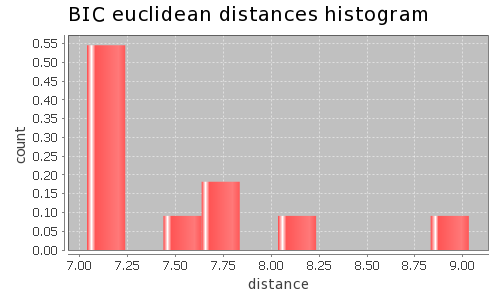

Application Meta
jModeltest 2.1
(c) 2011-onwards D. Darriba, G.L. Taboada, R. Doallo and D. Posada,(1) Department of Biochemistry, Genetics and Immunology
University of Vigo, 36310 Vigo, Spain.
(2) Department of Electronics and Systems
University of A Coruna, 15071 A Coruna, Spain.
e-mail: ddarriba@udc.es, dposada@uvigo.es
Tue May 14 03:35:29 EDT 2013
Linux 2.6.32-279.22.1.el6.x86_64, arch: amd64, bits: 64, numcores: 8
| Citation: | Darriba D, Taboada GL, Doallo R and Posada D. 2012. "jModelTest 2: more models, new heuristics and parallel computing". Nature Methods 9, 772. |
 Back to top
Back to top Settings
Arguments = -d aligned.fasta -g 4 -f -AIC -BIC -a -S BESTInput Alignment: "aligned.fasta"
NumTaxa = 11
Length = 711
Phyml version = 3.0
Phyml binary = PhyML_3.0_linux64
Candidate models = 12
number of substitution schemes = 3
including models with equal/unequal base frequencies (+F)
including only models without a proportion of invariable sites
including models with/without rate variation among sites (+G) (nCat = 4)
Optimized free parameters (K) = Substitution parameters + 19 branch lengths + topology
Base tree for likelihood calculations = Maximum Likelihood
Tree topology search operation = Best of {NNI, SPR}
Model Optimization Results
| ID | Name | Partition | -lnL | p | fA | fC | fG | fT | ti/tv | R(a) | R(b) | R(c) | R(d) | R(e) | R(f) | p-inv | shape |
|---|---|---|---|---|---|---|---|---|---|---|---|---|---|---|---|---|---|
| 1 | JC | 000000 | 5566.1445 | 20 | - | - | - | - | - | - | - | - | - | - | - | - | - |
| 2 | JC+G | 000000 | 5332.8583 | 21 | - | - | - | - | - | - | - | - | - | - | - | - | 0.5190 |
| 3 | F81 | 000000 | 5499.9412 | 23 | 0.2621 | 0.2849 | 0.1474 | 0.3056 | - | - | - | - | - | - | - | - | - |
| 4 | F81+G | 000000 | 5239.8846 | 24 | 0.2849 | 0.2987 | 0.1326 | 0.2839 | - | - | - | - | - | - | - | - | 0.4830 |
| 5 | K80 | 010010 | 5482.5112 | 21 | - | - | - | - | 1.2290 | - | - | - | - | - | - | - | - |
| 6 | K80+G | 010010 | 5224.3899 | 22 | - | - | - | - | 1.6522 | - | - | - | - | - | - | - | 0.4840 |
| 7 | HKY | 010010 | 5407.7243 | 24 | 0.2808 | 0.2821 | 0.1406 | 0.2965 | 1.3085 | - | - | - | - | - | - | - | - |
| 8 | HKY+G | 010010 | 5086.6743 | 25 | 0.3343 | 0.2961 | 0.1104 | 0.2593 | 2.6853 | - | - | - | - | - | - | - | 0.3380 |
| 9 | SYM | 012345 | 5371.8555 | 25 | - | - | - | - | - | 6.6481 | 6.6319 | 4.7157 | 1.0600 | 11.8361 | 1.0000 | - | - |
| 10 | SYM+G | 012345 | 5125.0478 | 26 | - | - | - | - | - | 5.4773 | 5.3993 | 3.9383 | 0.4003 | 18.0015 | 1.0000 | - | 0.4640 |
| 11 | GTR | 012345 | 5354.1880 | 28 | 0.2596 | 0.2591 | 0.1798 | 0.3015 | - | 5.7195 | 7.3582 | 3.6211 | 1.1761 | 9.2648 | 1.0000 | - | - |
| 12 | GTR+G | 012345 | 5080.3354 | 29 | 0.3296 | 0.2850 | 0.1368 | 0.2487 | - | 1.7632 | 4.6569 | 1.6804 | 0.5010 | 9.5802 | 1.0000 | - | 0.3770 |
There are 6 different topologies. The following table shows the models supporting each topology and the rank according to each Information Criterion, as well as Robinson-Foulds and Euclidean distances with the tree of the best-fit model.
| ID | Models | Topology | AIC | BIC | AICc | DT | |
|---|---|---|---|---|---|---|---|
| 0 |
F81+G K80+G HKY+G GTR+G
|
RANK | 0 | 0 | - | - | |
| Weight | 1.0000 | 1.0000 | - | - | |||
| RF | 0 | 0 | - | - | |||
| AVG Distance | 4.5584e+00 | 6.0968e+00 | - | - | |||
| Distance VAR | 1.2019e+01 | 1.2696e+01 | - | - | |||
| 1 |
K80 HKY
|
RANK | 1 | 1 | - | - | |
| Weight | 0.0000 | 0.0000 | - | - | |||
| RF | 8 | 8 | - | - | |||
| AVG Distance | 5.8434e+00 | 7.0395e+00 | - | - | |||
| Distance VAR | 1.6511e-07 | 6.3044e-07 | - | - | |||
| 2 |
SYM GTR
|
RANK | 2 | 2 | - | - | |
| Weight | 0.0000 | 0.0000 | - | - | |||
| RF | 8 | 8 | - | - | |||
| AVG Distance | 5.8562e+00 | 7.0787e+00 | - | - | |||
| Distance VAR | 4.1929e-06 | 6.1073e-07 | - | - | |||
| 3 |
SYM+G
|
RANK | 3 | 3 | - | - | |
| Weight | 0.0000 | 0.0000 | - | - | |||
| RF | 10 | 10 | - | - | |||
| AVG Distance | 6.8477e+00 | 8.1228e+00 | - | - | |||
| Distance VAR | 0.0000e+00 | 0.0000e+00 | - | - | |||
| 4 |
JC+G
|
RANK | 4 | 4 | - | - | |
| Weight | 0.0000 | 0.0000 | - | - | |||
| RF | 12 | 12 | - | - | |||
| AVG Distance | 6.5537e+00 | 7.5950e+00 | - | - | |||
| Distance VAR | 0.0000e+00 | 0.0000e+00 | - | - | |||
| 5 |
JC F81
|
RANK | 5 | 5 | - | - | |
| Weight | 0.0000 | 0.0000 | - | - | |||
| RF | 14 | 14 | - | - | |||
| AVG Distance | 5.8881e+00 | 7.1099e+00 | - | - | |||
| Distance VAR | 2.3669e-07 | 1.3062e-06 | - | - |
AIC Selection Results
Model selected
| Model | GTR+G | ||
|---|---|---|---|
| partition | 012345 | ||
| -lnL | 5080.3354 | ||
| K | 29 | ||
| freqA | 0.3296 | R(a) | 1.7632 |
| freqC | 0.2850 | R(b) | 4.6569 |
| freqG | 0.1368 | R(c) | 1.6804 |
| freqT | 0.2487 | R(d) | 0.5010 |
| ti/tv | - | R(e) | 9.5802 |
| R(f) | 1.0000 | ||
| p-inv | - | gamma | 0.3770 |
Best model tree
((seq1:5.96360089,Loach:0.00001245):0.24141407,Carp:0.17418402,(Frog:0.24658962,(Chicken:0.54432226,(Human:0.57014623,((Mouse:0.12966600,Rat:0.11622730):0.14588055,(Whale:0.14893035,(Seal:0.23048836,Cow:0.15240757):0.03858194):0.05415103):0.11334010):0.17887556):0.07418689):0.17958370);
Display best model tree in PhyloWidget
| Model | -lnL | K | AIC | delta | weight | cumWeight |
|---|---|---|---|---|---|---|
| GTR+G | 5080.3354 | 29 | 10218.6707 | 0.0000 | 0.9121 | 0.9121 |
| HKY+G | 5086.6743 | 25 | 10223.3487 | 4.6779 | 0.0879 | 1.0000 |
| SYM+G | 5125.0478 | 26 | 10302.0955 | 83.4248 | 0.0000 | 1.0000 |
| K80+G | 5224.3899 | 22 | 10492.7797 | 274.1090 | 0.0000 | 1.0000 |
| F81+G | 5239.8846 | 24 | 10527.7691 | 309.0984 | 0.0000 | 1.0000 |
| JC+G | 5332.8583 | 21 | 10707.7165 | 489.0458 | 0.0000 | 1.0000 |
| GTR | 5354.1880 | 28 | 10764.3759 | 545.7052 | 0.0000 | 1.0000 |
| SYM | 5371.8555 | 25 | 10793.7110 | 575.0402 | 0.0000 | 1.0000 |
| HKY | 5407.7243 | 24 | 10863.4485 | 644.7778 | 0.0000 | 1.0000 |
| K80 | 5482.5112 | 21 | 11007.0223 | 788.3516 | 0.0000 | 1.0000 |
| F81 | 5499.9412 | 23 | 11045.8824 | 827.2117 | 0.0000 | 1.0000 |
| JC | 5566.1445 | 20 | 11172.2890 | 953.6183 | 0.0000 | 1.0000 |
| -lnL: | negative log likelihod |
| K: | number of estimated parameters |
| AIC: | Akaike Information Criterion |
| delta: | AIC difference |
| weight: | AIC weight |
| cumWeight: | cumulative AIC weight |
Confidence interval
There are 12 models in the 100.00% confidence interval:
GTR+G HKY+G SYM+G K80+G F81+G JC+G GTR SYM HKY K80 F81 JC
Euclidean distances histogram from each model optimized tree to GTR+G tree.
Robinson-Foulds distances histogram from the different topologies to GTR+G topology.
Model Averaged Phylogeny
| Selection criterion | AIC |
|---|---|
| Confidence interval | 100.00% |
| Consensus type | 50% majority rule |
(Carp:0.174184,(Frog:0.246590,(Chicken:0.544322,(Human:0.570146,((Mouse:0.129666,Rat:0.116227)1.00:0.145881,(Whale:0.148930,(Seal:0.230488,Cow:0.152408)1.00:0.038582)1.00:0.054151)1.00:0.113340)1.00:0.178876)1.00:0.074187)1.00:0.179584,(seq1:5.963601,Loach:0.000012)1.00:0.241414);
Display consensus tree in PhyloWidget
BIC Selection Results
Model selected
| Model | HKY+G | ||
|---|---|---|---|
| partition | 010010 | ||
| -lnL | 5086.6743 | ||
| K | 25 | ||
| freqA | 0.3343 | R(a) | - |
| freqC | 0.2961 | R(b) | - |
| freqG | 0.1104 | R(c) | - |
| freqT | 0.2593 | R(d) | - |
| ti/tv | 2.6853 | R(e) | - |
| R(f) | - | ||
| p-inv | - | gamma | 0.3380 |
Best model tree
(Carp:0.17654327,(Frog:0.28185555,(Chicken:0.64731721,(Human:0.68687629,((Mouse:0.15062594,Rat:0.13550091):0.19143613,(Whale:0.17757206,(Cow:0.15882401,Seal:0.26589454):0.04862517):0.06181962):0.14336528):0.23445795):0.07974109):0.21363677,(seq1:7.09553425,Loach:0.00003171):0.27067722);
Display best model tree in PhyloWidget
| Model | -lnL | K | BIC | delta | weight | cumWeight |
|---|---|---|---|---|---|---|
| HKY+G | 5086.6743 | 25 | 10337.5155 | 0.0000 | 0.9989 | 0.9989 |
| GTR+G | 5080.3354 | 29 | 10351.1042 | 13.5887 | 0.0011 | 1.0000 |
| SYM+G | 5125.0478 | 26 | 10420.8290 | 83.3135 | 0.0000 | 1.0000 |
| K80+G | 5224.3899 | 22 | 10593.2465 | 255.7311 | 0.0000 | 1.0000 |
| F81+G | 5239.8846 | 24 | 10637.3693 | 299.8538 | 0.0000 | 1.0000 |
| JC+G | 5332.8583 | 21 | 10803.6166 | 466.1012 | 0.0000 | 1.0000 |
| GTR | 5354.1880 | 28 | 10892.2427 | 554.7273 | 0.0000 | 1.0000 |
| SYM | 5371.8555 | 25 | 10907.8778 | 570.3623 | 0.0000 | 1.0000 |
| HKY | 5407.7243 | 24 | 10973.0486 | 635.5332 | 0.0000 | 1.0000 |
| K80 | 5482.5112 | 21 | 11102.9224 | 765.4070 | 0.0000 | 1.0000 |
| F81 | 5499.9412 | 23 | 11150.9158 | 813.4004 | 0.0000 | 1.0000 |
| JC | 5566.1445 | 20 | 11263.6224 | 926.1070 | 0.0000 | 1.0000 |
| -lnL: | negative log likelihod |
| K: | number of estimated parameters |
| BIC: | Bayesian Information Criterion |
| delta: | BIC difference |
| weight: | BIC weight |
| cumWeight: | cumulative BIC weight |
Confidence interval
There are 12 models in the 100.00% confidence interval:
HKY+G GTR+G SYM+G K80+G F81+G JC+G GTR SYM HKY K80 F81 JC

Euclidean distances histogram from each model optimized tree to HKY+G tree.
Euclidean distances histogram from each model optimized tree to HKY+G tree.
Robinson-Foulds distances histogram from the different topologies to HKY+G topology.
Model Averaged Phylogeny
| Selection criterion | BIC |
|---|---|
| Confidence interval | 100.00% |
| Consensus type | 50% majority rule |
(Carp:0.176543,(seq1:7.095534,Loach:0.000032)1.00:0.270677,(Frog:0.281856,(Chicken:0.647317,(Human:0.686876,((Whale:0.177572,(Cow:0.158824,Seal:0.265895)1.00:0.048625)1.00:0.061820,(Mouse:0.150626,Rat:0.135501)1.00:0.191436)1.00:0.143365)1.00:0.234458)1.00:0.079741)1.00:0.213637);
Display consensus tree in PhyloWidget